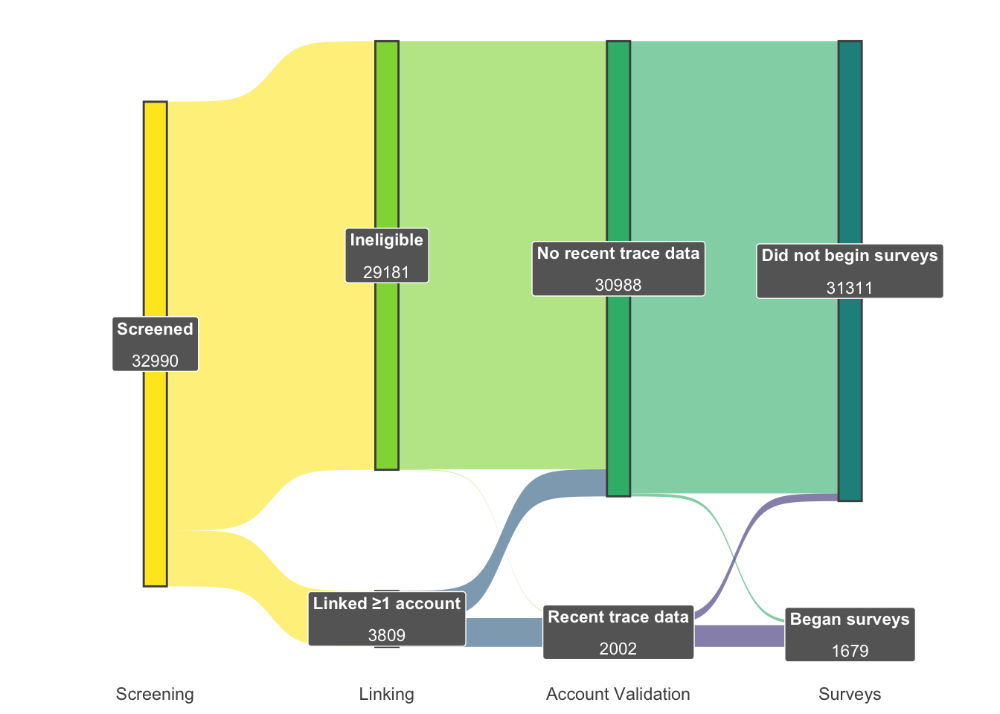
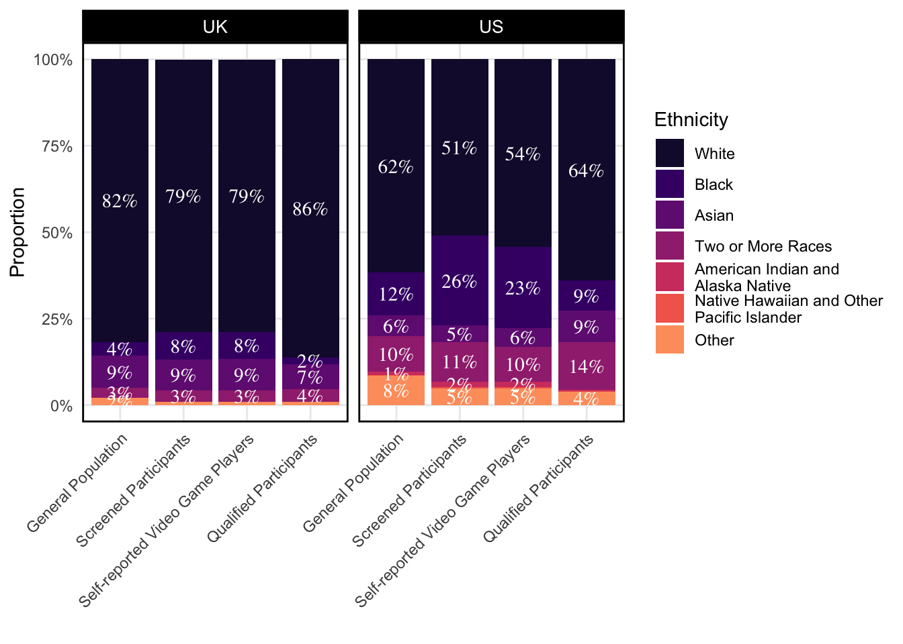
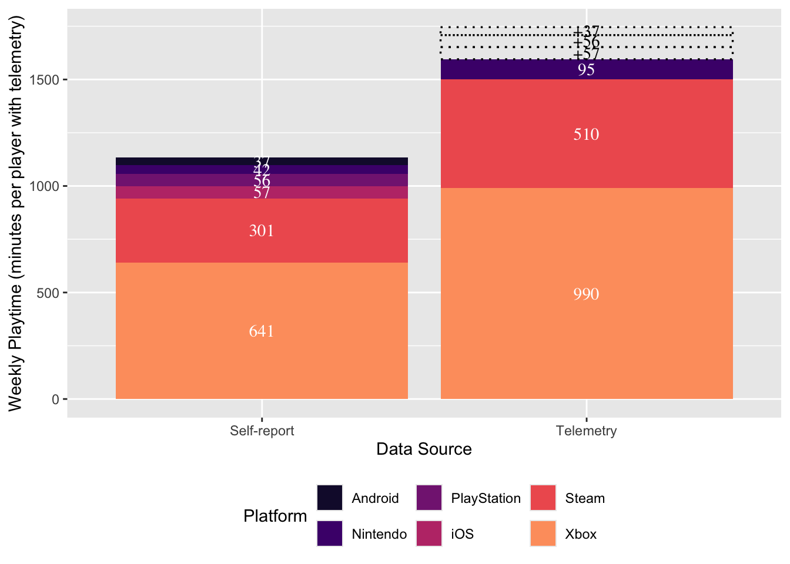

![]()

A multi-platform dataset of digital trace data from video games
Introduction
Scientists widely agree that digital trace data—behavioral logs automatically collected by online platforms—are necessary to understand the effects of technology on varied outcomes such as health, wellbeing, academic achievement, and cognition. Users struggle to accurately self-report even high-level measures of use (e.g., total screentime) [@ParryEtAl2021systematic], and these high-level metrics are generally poorly predictive of outcomes [@Orben2019Teens]. To systematically understand the effects of technology, we therefore need data that captures nuanced factors we now know to be much more impactful: the frequency, duration, and time of day of each session, the specific content engaged, and the trajectory of user behavior over time. Digital trace data is well-suited to address this need.
As one of the world’s foremost leisure activities, video games are a key Digital trace data has been widely implemented in many studies of social media and wellbeing, but in studies of video games has been much more limited. In part, this is a function of availability: video game consoles are restrictive and typically do not allow third party tracking software; most video game platforms do not have a 1-click “download my data” option offered by several social media platforms (e.g., TikTok, Instagram); and there are thousands of individual games whose data may be relevant for a given study or population.
Where trace data has been used in video games studies, it has largely been limited to a single game [@VuorreEtAl2022Time; @JohannesEtAl2021Video; @LarrieuEtAl2023How; @PerryEtAl2018onlineonly] or platform [@BallouEtAl2023Gaming; @BallouEtAl2025Perceived] per user. Previous studies that secured video game telemetry was widely limited to a single game or a single gaming platform. However, as the data we present here shows, players commonly use a wide range of games and platforms. Capturing just one game or one gaming platform among potentially many that the person may be engaging with—and affected by. For example, a player may
Digital trace data on its own is limited however; without additional information from users about how their lives are going, we will struggle to understand the causal network. In the field of game analytics, a number of studies have digital trace data to explore social networks, We therefore see particular value in longitudinal studies that combine comprehensive digital trace data with repeated surveys, in both experimental and observational contexts. Ideally, surveys should be frequent enough to capture short-term effects (e.g., playing a game to recover from a stressful workday) and longer-term development (e.g., a pattern of increasing play over time displacing sleep).
Overview
This paper addresses this need for longitudinal digital trace data across multiple gaming platforms. Here, we present a dataset consisting of 1.8K participants, 14.2K daily surveys, 4.4K surveys, and a total of 3.4M of gameplay distributed across 5.7M.
Digital trace data was sourced for five distinct platforms—Xbox, Nintendo, Steam, iOS, and Android—through distinct piplines detailed below.
The dataset is openly available at [LINK] under a CC0 license for unrestricted reuse.
Design
The study consisted of four stages (Figure 1).
Stage 1: Screening
In the first stage, we screened participants in order to find people aged 18-40 who (1) self-report playing video games, (2) self-report that at least 50% of their total video game play takes place on the platforms included in the study, and (3) were willing to link their gaming accounts to provide digital trace data. We screened participants from two panel sources: PureProfile and Prolific.
Participants were recruited under an initial set of ethnicity‐based quotas designed to mirror the general population’s demographic composition. After we reached approximately 50% of our target sample under quota constraints and found that further quota‐eligible recruits were scarce, we suspended the quotas for the remainder of data collection; all subsequent participants were enrolled on a first‐come, first‐served basis. Final sample characteristic reflect both quota‐driven and open‐enrollment phases (see below).
Stage 2: Account Linking
Participants who were deemed eligible during screening proceeded directly to an account linking survey wherein they provided details of the gaming platforms they actively use. For UK participants, this includes Nintendo Switch, Steam, Android and iOS. For US participants, this includes the same four alongside Xbox. Details of how participants linked each type of account are shown in Table 1.
| Platform | Data Source | Account Linking Process | Type of Data Collected |
|---|---|---|---|
| Nintendo | Data-sharing agreements with Nintendo of America (US) and Nintendo of Europe (UK) | Participants share an identifier contained within a QR code on Nintendo web interface[ [[1 |
Session records (what game was played, at what time, for how long) for 1st party games (games published in whole or in part by Nintendo, but not by third party publishers such as Electronic Arts). In previous research, Nint e n do-published games accounted for 65% of Switch playtime @BallouEtAl 2 0 25Perceived. |
| Xbox (US only) | Data-sharing agreement with Microsoft | Participants consent to data sharing by opting in to the study on Xbox Insiders[ [[1 |
Session records (what game was played, at what time, for how long). The name of the game replaced with a random persistent identifier for all third-party games (i.e., those not published by Xbox Game Studios), but genre(s) and age ratings are shared. |
| Steam | Custom web app (Gam e p lay.Science) | Participants sign up for Ga m e play.Science ( < h ttps://gamep la y .science),> an open-source platform for tracking Steam gameplay. Participants consent to have their gameplay data monitored for the duration of the study. Their Steam ID is a uthenticated using the official Steam a u thentication API (OpenID). | Incremental playtime per game (every hour, the total time spent playing during the previous hour) |
| iOS | iOS Screen Time Screenshots | At each biweekly survey, participants submit screenshots from the built-in iOS Screen Time app. These show details of the previous 3 weeks’ of gaming app use (whats games were played and for how long). Data was extracted using OCR. | Total weekly playtime per game (e.g., 2 hours on game X, 5 hours on game Y) |
| Android | Digital Wellbeing Screenshots | At each biweekly survey, participants submitted screenshots from the Digital Screen Time app, if available on their Android OS. These show details of the previous 3 weeks’ of phone use (what app categories are used and for how long). Data was extracted using OCR. | Total weekly playtime per game (e.g., 2 hours on game X, 5 hours on game Y) |
Stage 3: Account Validation
After players completed the account linking process, we . Participants needed to have valid telemetry from at least one platform in order to be eligible for the next stage of the study. Participants who did not have valid telemetry were excluded from the study
Stage 4: Surveys
Eligible participants were invited to complete 6 waves of panel surveys, one every two weeks. Eligible US participants will additionally be invited to complete daily diary surveys for 30 days, concurrently with the first panel surveys. Running survey types concurrently allows us to harmonize distribution across regions without delaying the UK sample on the US sample’s account, and to minimize attrition.
Diary survey links were sent every day at 2pm local time for the participant and remained available until 3am. Panel survey links were sent every second week from the first day of the study at 12pm and remained available for 96 hours.
Participants

Our final sample consists of 2002 qualified participants, selected from a pool of 32990 screened participants. Of the 2002 with recent telemetry, 4408 also completed at least one survey.
Our screening sample was roughly representative of the general population of the US and UK by ethnicity (Figure 2) and gender identity: Man (14736, 47.7%); Other (372, 1.2%); Woman (15777, 51.1%); Man (1305, 65.2%); Other (125, 6.2%); Woman (572, 28.6%).
The sample of qualified participants is less representative of the general population, containing more men and non-binary participants (Man (14736, 47.7%); Other (372, 1.2%); Woman (15777, 51.1%); Man (1305, 65.2%); Other (125, 6.2%); Woman (572, 28.6%)), as well as fewer black participants (Figure 2)
Ethics and Compensation
This study received ethical approval from the Social Sciences and Humanities Inter-Divisional Research Ethics Committee at the University of Oxford (OII_CIA_23_107). All participants provided informed consent at the start of the study, including consent to their data being shared openly for reanalysis.
Prolific participants were paid at a rate of £12/hour for all study components, which equates to: £0.20 for a 1-minute screening (plus £5 for linking at least one account with recent data), £2 for a 10-minute intake survey, £0.80 for each 4-minute daily survey, and £2 for each 10-minute biweekly survey. Participants received £10 bonus payments for completing at least 24 out of 30 daily surveys and/or 5 out of 6 biweekly surveys.
Deviations from Preregistration
Due to challenges in the recruitment process, we made several deviations from our preregistration. These changes were made to ensure we could recruit enough participants to meet our sample size goals and to improve the quality of the data collected, but in our view do not threaten the validity of the study. The following deviations were made:
TODO: convert to table
- After exhausting the PureProfile participant pool, we recruited additional participants through the Prolific platform.
- After exhausting available participants when screening for representative samples for ethnicity and gender, we later removed quotas and allowed participants from all backgrounds
- Instead of recruiting participants aged 18–30 in the US and 18–75 in the UK, we recruited participants in both regions from 18–40. This was done because (1) we were unable to recruit enough participants in the US aged 18–30, and (2) we wanted results from both regions to be comparable.
- Instead of requiring 75% of total gameplay to take place on the platforms included in the study, we instead required 50%
- Rather than requiring valid play data from the 7-day baseline period, we required valid play data from the previous 14-days after feedback from participants indicated that play during a 7-day period was too easily disrupted by real-world events.
- Instead of sending surveys at 7pm local time, we sent them at 2pm to increase our response rate after feedback from participants indicated that evening plans often interfered with survey completion.
- Due to restrictions in the privacy policy of PureProfile, we were not able to install third-party apps on users’ phones, and therefore could not capture Android trace data using ActivityWatch. Instead, we used a similar process as iOS by leveraging the Digital Wellbeing interface present on many Android models
Dataset

TODO: single case study plot
Demographic measures
We collected the following demographic variables:
- age
- gender
- ethnicity
- educational attainment
- employment status
- height
- weight
- self-identified neurodivergence (e.g., ASD, ADHD, dyslexia)
- diagnosed neurodivergence
- marital status
- caretaking responsibilities (children, family members)
- postal geography (general area only; first three digits of the five-digit US ZIP Code; UK outward code)
Self-report measures
Trait measures
| Construct | Measure | Example Item |
|---|---|---|
| Chronotype | ||
Daily measures
| Construct | Measure | Example Item | Internal consistency (McDonald’s ω_h) |
|---|---|---|---|
| Basic psychological need satisfaction and frustration | Basic Psychological Need Satisfaction and Frustration Scale [@Che n EtAl2015Basic] brief version @MartelaRy a n2024Assessing | I was able to do things that I really want and value in life. | |
Consensus Sleep Diary (https://doi.org/10.5665/sleep.1642)
Basic Needs in Games Scale (https://doi.org/10.31234/osf.io/4965z7)
Daily Inventory of Stressful Events (https://doi.org/10.1177/1073191102091006)
Life satisfaction - Cantril Self-anchoring Scale (Cantril, 1965)
Affective valence
Biweekly measures
Monthly measures
Self-reported play
Social context of play: Participants reported which types of social play they engaged in during the last 24 hours (single-player games only, multiplayer with real-world friends, multiplayer with online-only friends, multiplayer with strangers). Participants could select more than one option.
Digital Trace Data
TODO: distribution across platforms
Digital trace data from games is collected from five platforms: Xbox, Nintendo Switch, Steam, iOS, and Android. Each platform differs in its data structure and collection method. On Xbox and Nintendo, we have session-level data, comprised includes the following fields: . On Steam we have hourly aggregates - every hour, how much time people spent playing each game. On iOS and Android, we have daily aggregates - every day, how much time people spent playing each game. We describe each platform in more detail below.
Xbox
Xbox data is comprised of session histories—that is, a record of the start and end times when a user plays a game on Xbox. Data was provided via a data-sharing agreement with Microsoft.
Due to restrictions in our data-sharing agreement, game titles are anonymized and only the game ID is provided alongside information about its genre(s) and age rating. The game ID is a unique identifier for each game title, allowing us to analyze gameplay without identifying specific games.
Nintendo Switch
Steam
iOS
Android
Discord
Executive Function
Time Use
Data Quality Checks
We implemented a variety of data quality checks.
- In each daily and biweekly survey, one item from the BANGS (daily) and BPNSFS (biweekly) was duplicated to assess response consistency [@MeadeCraig2012identifying]; participants whose responses to the two identical items differed by more than one scale point were flagged for potential careless responding.
- In the telemetry, we use several heuristics to identify potential unreliable sessions: sessions beginning or ending in the future (indicative of clock manipulation or other errors), sessions longer than 12 hours long, and [TODO: other heuristics]
Missingness
Discussion
We believe this dataset has potential to address a wide variety of common research questions in the field.
Some of these questions will be addressed in forthcoming registered reports: specifically, we have plans to test (1) key hypotheses from the Basic Needs in Games model [@BallouDeterding2024Basic] about how gaming relates to basic psychological needs over time, (2) the relationship between late-night gaming and sleep, and (3) the relationship between playtime in different genres and wellbeing.
Nonetheless, the richness of this data means that researchers can explore numerous other questions (or, indeed, conduct and compare alternative analysis approaches to the above questions). To stimulate ideas, we present a few questions we think the data are well-suited to answering.
How do seasons and weather impact playtime? Because we capture timestamped play sessions alongside participants’ geographic locations, researchers can merge in high‐resolution weather and daylight data to examine how environmental factors causally influence gaming behavior. Causal inference techniques such as inverse probability weighting can enable precise estimates of how, when, and how much people play in response to seasonal and meteorological changes. By quantifying these effects, researchers can better distinguish weather‐related demand from other drivers (like work schedules or weekend routines), improving the precision of studies on gaming’s impact on wellbeing, motivation, and cognition.
How do neurotypical and neurodiverse players differ in their gaming behavior? Using the neurodivergence data we collected (which includes, for example, 358 participants who identify as having autism and 495 who identify as having ADHD), researchers can. Neurodiversity in games has regularly been studied in the context of specific games and with qualitative methods
Self-reported play accuracy - inference from other papers
Future Work
The trace data presented here is wide-ranging, but shallow—we capture all gaming that happens on a particular platform or set of platforms, but have no insight into what the player is doing in-game. With previous work and theory clear that in-game behavior (e.g., what character role a player adopts) and experiences (e.g., performance in competitive modes) are key features of games’ wellbeing impacts,
There is an inherent trade-off between breadth (how widely telemetry can be captured) and depth (the level of detail about in-game behaviours). At present, we areWe see strong potential in study designs that capture platform-level contextual data, combined with
Data Availability
All data, materials, and code related to this dataset are available on the Open Science Framework [TODO: LINK], and the data is archived on Zenodo [TODO: LINK].